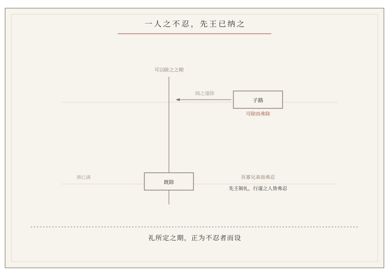

檀弓上 · 三·二十五 · 第 228 课
子路有姊之丧，已可除服而弗除。孔子问何故，曰「吾寡兄弟而弗忍也」。孔子曰「先王制礼，行道之人皆弗忍也」。子路闻之，遂除之。注「行道，犹行仁义」。
说什么事：一个人不忍除服，被一句话劝服。
落在哪一层：礼，兼及礼意与人情。论礼本乎人之所不忍。
为何编在此位：上节论礼之不与，此节论礼之所本。严与厚，皆出于一。
【经】子路有姊之喪，可以除之矣，而弗除也。孔子曰：「何弗除也？」子路曰：「吾寡兄弟而弗忍也。」孔子曰：「先王制禮，行道之人，皆弗忍也。」子路聞之，遂除之。
【注】行道，犹行仁义。
【疏】庾蔚云：「子路缘姊妹无主后，犹可得反服；推己寡兄弟，亦有申其本服之理，故于降制已远而犹不除，非在室之姊妹欲申服过期也。是子路已事仲尼，始服姊丧，明姊已出嫁，非在室也。」
可以除之 服期已满，礼许除服。
弗除 不除。所居者已过礼限。
寡兄弟 兄弟少。注疏谓其推己及姊。
行道之人 注「犹行仁义」。行仁义之人。
皆弗忍 没有一个忍心。此句有两读：一谓行道之人亦皆有不忍，故礼为之制；一谓行道之人皆能忍，故不可独不忍。
子路有姊之丧，已到可以除服的时候，却不除。孔子问：「为什么不除？」子路说：「我兄弟少，不忍。」孔子说：「先王制礼，行仁义的人都是这样不忍的。」子路听了，便除了。
此节一问一答一断。子路的理由是「寡兄弟而弗忍」，出于至情；孔子不斥其情，只说一句「先王制礼，行道之人皆弗忍也」——把「不忍」从个人之情提升为制礼之由。于是子路自除。全节最妙处：夫子没有说「你不该不忍」，而是说「你的不忍，先王已经算进去了」。
第一层 弗忍之情 子路寡兄弟，故于姊之丧不肯按期而除。此情极真：兄弟少，则每一个亲人都重一分。礼不否认此情，先承认它。
第二层 「皆弗忍」之两读 此句若读作「行道之人也都这样不忍」，则礼是为人情留了余地；若读作「行道之人却能忍」，则礼是要人以理胜情。疏未定，两读皆通。前读近于「礼本人情」，后读近于「礼以节情」。合而观之，先王制礼，正是把众人之不忍定为一个可共守的限，使人人不必各自不忍到无节。
第三层 一言而除 子路「闻之，遂除之」。不辩、不再请。此一层可见子路之直：他服与不服都痛快。也可见夫子之教：不以势压，只把理摆出来。
第四层 庾蔚之细辨 疏引庾蔚：子路是缘「姊妹无主后」而可反服，又推己寡兄弟而有申本服之理，故于降制已远而犹不除；并断定「子路已事仲尼始服姊丧，明姊已出嫁，非在室」。此辨把一件不肯除服的事，落到具体的服制条文中，是疏家本色。
与今日何干 凡丧、凡礼、凡期限，总有人不肯按期而止。此时最难的不是催他，而是让他知道：他的不肯，礼早已想到；礼所定的期，正是替所有不肯的人定的。
| 左 | 右 |
|---|---|
| 可以除之矣而弗除 | 服期已满，礼许除服 |
| 吾寡兄弟而弗忍 | 情之至处，礼先承认 |
| 先王制礼 | 把众人之不忍定为共守之限 |
| 行道之人皆弗忍 | 行仁义者皆同此心 |
| 子路闻之遂除之 | 一言而服，不复辩 |
| 庾蔚：姊妹无主后可得反服 | 服制之细，落于条文 |
| 明姊已出嫁，非在室 | 故有降制可除 |
画一间简素的屋内，视点平。地上一条浅色的席，席端一只木匣（盛衰麻之服），匣盖半开，里面叠着麻衣与麻带。席上坐着一位壮年男子（深衣、束发、体貌刚健），一手按在匣盖上，肩背微向前。他对面坐着一位长者（衣色较浅、手置膝上），两人之间只隔一小片空地，地上无案无器。窗外一线天光落在匣上。不写文字、不画人面细节。赭色只用在匣盖的合缝与长者膝前的一小片席纹上。
